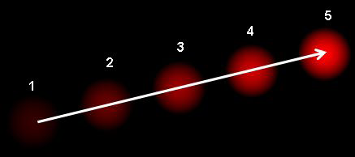

Lesson_29_Optical_Flow
الدفق البصري هو النموذج الظاهر للحركة الظاهرة بين اطارين متتالين بسبب حركة الجسم أو الكاميرا , وهو حقل شعاعي ثنائي البعد حيث كل شعاع هو هو شعاع ازاحة لاظهار حركة النقاط , من اطار لاخر. فليكن لدينا الصورة :

وهي تظهر كرة تقع من 5 إطارات متتالية , السهم يدل على شعاع الازاحة . الدفق البصري لديه عدة مجالات للتطبيق ك:
-
التركيب من الحركة
-
ضغط الفيديو
-
تثبيت الفيديو
الدفق البصري يعمل وفق عدة افتراضات:
-
كثافات البكسل للجسم لاتختلف عبر الاطارات المتعاقبة
-
البكسلات المتجاورة لديها أنماط حركة متشابهة
فليكن لدينا بكسل I(x,y,t) بالاطار الاول (لاحظ إضافة بعد زمني هنا للبكسل)يتحرك بمسافة dx,dy بالاطار التالي المأخوذ بالفترة dt , بما أن هذه البكسلات هي نفسها شدة , يمكننا القول:
$$I(x,y,t)= I(x+d_x,y+d_y,t+d_t)$$
ثم نأخذ منشور تايلور لحد اليد اليمنى , نزيل الحدود الشائعة , ونقسمها على dt ثانية للحصول على التالي:
$$f_x u + f_y v + f_t = 0 $$
حيث :
$$ f_x = \frac{\partial{f}}{\partial{x}}; f_y = \frac{\partial{f}}{\partial{y}}\n u = \frac{dx}{dt}; v=\frac{dy}{dt} $$